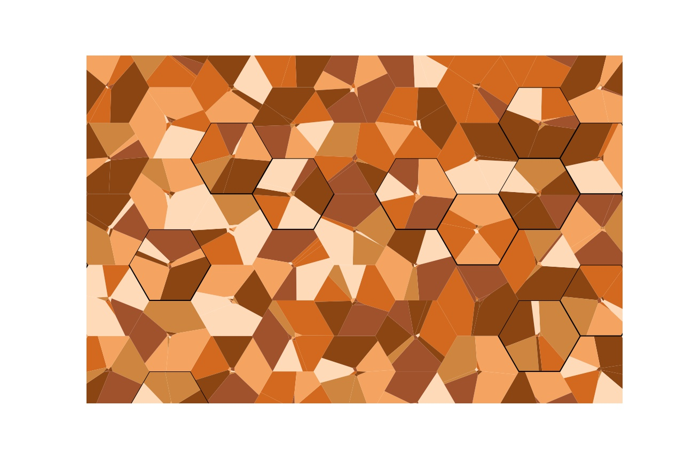

Example: Voronoi Hexagonal Tiles¶

How to go about creating the image above? Did you notice the hexagons hidden in plain sight? The colored fragments do combine to form hexagons. I got this idea to fill a 2-D space with Hexagonal Voronoi polygons. But the journey turned out to be trickier than I originally expected. In this example, I try to recreate my various attempts.
A Voronoi diagram is “the partitioning of a plane with n points into convex polygons such that each polygon contains exactly one generating point and every point in a given polygon is closer to its generating point than to any other.” (Wolfram)
I have always liked Voronoi diagrams. So it was natural that I should try and use them to create Hexagonal tiles. I knew that in Python, this was easily done by using the SciPy module.
The example seemed straightforward to try.
points = np.random.rand(7,2)
# compute Voronoi tesselation
vor = Voronoi(points)
voronoi_plot_2d(vor, show_vertices = True)
# colorize
for region in vor.regions:
if not -1 in region:
polygon = [vor.vertices[i] for i in region]
plt.fill(*zip(*polygon), fc='red')
{kind=link}
Now, if we take a few points inside a hexagon, we can then try and divide up the entire hexagon into Voronoi spaces.
#Generate 10 random points inside a hexagon
points = []
for _ in range(10):
size=0.5
dist = np.random.random() * size
theta_offset = np.random.randint(9) * 10
i = np.random.randint(6)
points.append( h.get_points_center_rtheta(dist, theta_offset, index=i)[0])
voronoi_plot_2d(vor, show_vertices = True)
h.render(fill=None)
plt.axis('scaled')
{kind=link}
I was able to create Voronoi polygons, but they simply did not fill the space at all.
plt.plot(vor.vertices[:,0],vor.vertices[:,1], 'o', color='orange')
hverts = np.array(h.get_verts())
plt.plot(hverts[:,0], hverts[:, 1], 'b-')
for r in result:
plt.fill(*zip(*np.array(list(
zip(r.boundary.coords.xy[0][:-1], r.boundary.coords.xy[1][:-1])))),
alpha=0.6)
plt.axis('scaled')
{kind=link}
{kind=link}
The orange dots in the image above are Voronoi vertices. But as you can see, there a vast part of the Hexagon that is simply not filled. Drawing the region by itself didn’t lead to any insights.
I was stuck in this point for quite some time. More than once, I was ready to give up. But I kept searching to see how others had approached this.
After many more such failed attempts and mishaps, I got an inspiration from this Stackoverflow answer
I noticed that this person was able to take this
{kind=link}
and create this, which is very similar to what I was after.
{kind=link}
To achieve this, this person had added 4 points well outside the shape of interest. And then by cutting off the x and y limits they got the image they desired.
But my problem is that my base shape is not rectangular. It is a hexagon. After a lot of web searches I figured that an “shape” intersection was the answer. For that, I would have to use the very popular shapely package. Another SO answer really helped me understand how to approach intersecting polygons.
#Adding 6 points well OUTSIDE the Hexagon,
# so that Voronoi will surely cover the entire hexagon
#Doing this so that when intersected with the hexagon mask,
# no part of the original hexagon will be missed
pull_points = h.get_points_center_rtheta(size*4, theta_offset, index=None)
points = np.append(points, pull_points, axis = 0)
Side note: Installing shapely in windows was a bit tricky. But anyway, I finally was getting somewhere.
{kind=link}
Now, all that remains is to “intersect” my bigger voronoi area and cut out just the hexagon inside it. In order to make sure that I don’t miss any part of the hexagon, my “pull” points are at least 4*size of the hexagon-side away. That seemed to work.
ridge_lines = [
LineString(vor.vertices[line])
for line in vor.ridge_vertices if -1 not in line]
pts = MultiPoint([Point(i) for i in h.get_verts()])
hex_mask = pts.convex_hull.union(pts.buffer(0.1, resolution=5, cap_style=2))
result = MultiPolygon([poly.intersection(hex_mask) for poly in polygonize(ridge_lines)])
{kind=link}
Once the idea works for one Hexagon, and it is filled entirely with Voronoi polygons, it was just a matter of choosing the right color palette and putting the pieces together.
{kind=link}